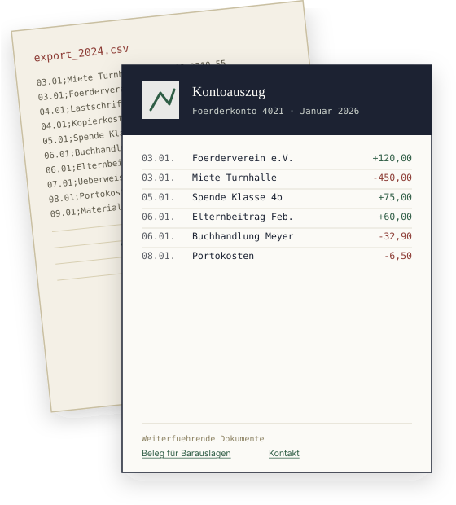
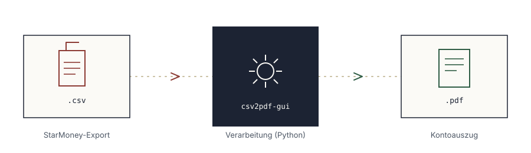
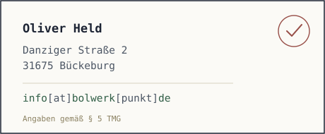

Kontoauszüge, die sich tatsächlich lesen lassen.
csv2pdf-gui macht aus StarMoney-CSV-Exporten übersichtliche PDF-Kontoauszüge mit Logo, Kontoname und Datum. Herunterladen, doppelklicken, fertig.

Vom Rohexport zum vorzeigbaren Beleg
StarMoney exportiert Kontobewegungen als schmucklose Tabelle. Praktisch zum Weiterverarbeiten, aber nichts, das man einem Vorstand, einem Kollegium oder einem Fördermitglied in die Hand drücken möchte.
csv2pdf-gui übernimmt genau diesen letzten Schritt: Es ordnet die Buchungen nach Tagen, setzt sie in eine saubere Tabelle und legt einen Kopfbereich mit Logo, Kontoname und Datum darüber. Heraus kommt ein Kontoauszug als PDF, den man ausdrucken oder weitergeben kann.
Was das Tool übernimmt
Sechs Punkte, die den Unterschied zwischen einer Rohdatei und einem fertigen Beleg ausmachen.
Logo frei wählbar
Ein beliebiges Bild als Logo, zum Beispiel das Schullogo. Es wird automatisch passend verkleinert. Kein Logo? Dann bleibt der Kopf einfach leer.
Kopf-Schriftart einstellbar
Für Kontoname, Datum und Hinweistext stehen mehrere Schriften zur Auswahl. Auf Wunsch auch eine eigene Schriftdatei.
Links im Fußbereich
Schulordnung, Kontakt, Datenschutzerklärung: beliebig viele anklickbare Links am Ende jedes Kontoauszugs.
Ordner automatisch überwachen
Auf Wunsch schaut das Programm regelmäßig in den Ordner und verarbeitet neue Exporte von selbst. Bereits erledigte bleiben unangetastet.
CSV-Originale bleiben erhalten
Die exportierten Dateien aus StarMoney werden nicht angetastet. Gelöscht wird nur, wenn Sie das ausdrücklich einstellen.
Keine Installation nötig
Eine einzige Datei herunterladen und per Doppelklick starten. Kein Setup, keine Zusatzprogramme, keine Administratorrechte.
Ablauf in drei Schritten
Vom Export in StarMoney bis zum fertigen Beleg im Ordner.

StarMoney exportieren
Unter Verwaltung → Datenexport → CSV-Spaltenkonfiguration ein Exporttemplate mit den Spalten „Buchungstag“, „Begünstigter/Absender – Name“, „Betrag“ und „Saldo“ anlegen. Nur CSVs in diesem Format werden aktuell korrekt verarbeitet.
Ordner auswählen
In csv2pdf-gui den Ordner mit den exportierten Dateien wählen und auf „Kontoauszuege erstellen“ klicken.
Fertige PDFs abholen
Die PDFs liegen im selben Ordner, benannt nach Kontoname und Datum. „Ordner oeffnen“ zeigt sie direkt an.
Installation
In wenigen Minuten startklar. Sie brauchen nur einen Windows-Rechner und Ihre StarMoney-Exporte.
Programm herunterladen
In einen eigenen Ordner legen
Legen Sie zum Beispiel in „Dokumente“ einen Ordner csv2pdf an und verschieben Sie die heruntergeladene Datei dorthin. Dort merkt sich das Programm später auch Ihre Einstellungen.
Doppelklick zum Starten
Beim allerersten Start zeigt Windows eventuell den blauen Hinweis „Der Computer wurde durch Windows geschützt“. Das ist normal bei kleinen Programmen ohne kostenpflichtige Signatur. Klicken Sie auf Weitere Informationen und dann auf Trotzdem ausführen. Danach startet das Programm ohne Rückfrage.
Kontoauszüge erstellen
Mit Ordner waehlen… den Ordner mit den StarMoney-Exporten auswählen und auf Kontoauszuege erstellen klicken. Fertig.
Download
Aktuelle Version: 0.2 · Für Windows 10 und 11
Ältere Versionen · Für Mac, Linux und Fortgeschrittene: Anleitung auf GitHub
Rechtliches
Haftungsausschluss
Dieses Werkzeug wird kostenlos und ohne Gewähr zur Verfügung gestellt. Die Nutzung erfolgt auf eigene Gefahr. csv2pdf-gui steht in keinem Zusammenhang mit der Lutherschule Hannover und ist keine offizielle Software der Schule. Es wurde von der technischen Schulassistenz eigenständig per KI-Prompting erstellt, um die tägliche Arbeit zu erleichtern.
Markenhinweis
„StarMoney“ ist eine eingetragene Wortmarke der Star Finanz-Software Entwicklung und Vertriebs GmbH, Hamburg. Die Nennung auf dieser Seite dient ausschließlich der Beschreibung der Kompatibilität mit dem Exportformat dieser Software und erfolgt zu rein informellen Zwecken. Es besteht keine Verbindung, Kooperation oder Beauftragung durch den Markeninhaber.
Datenschutz & Cookies
Diese Website setzt keine Cookies, kein Tracking und keine Analysewerkzeuge ein. Es werden keine personenbezogenen Daten gespeichert oder an Dritte weitergegeben. Die Seite lädt keinerlei externe Ressourcen nach — auch keine Schriftarten von Drittanbietern wie Google Fonts. Alle Schriften stammen aus der auf dem jeweiligen Gerät bereits installierten System-Schriftauswahl.
Impressum
Angaben gemäß § 5 TMG. Die Kontaktdaten sind aus Datenschutzgründen als Grafik hinterlegt und daher nicht direkt als Text kopierbar.
